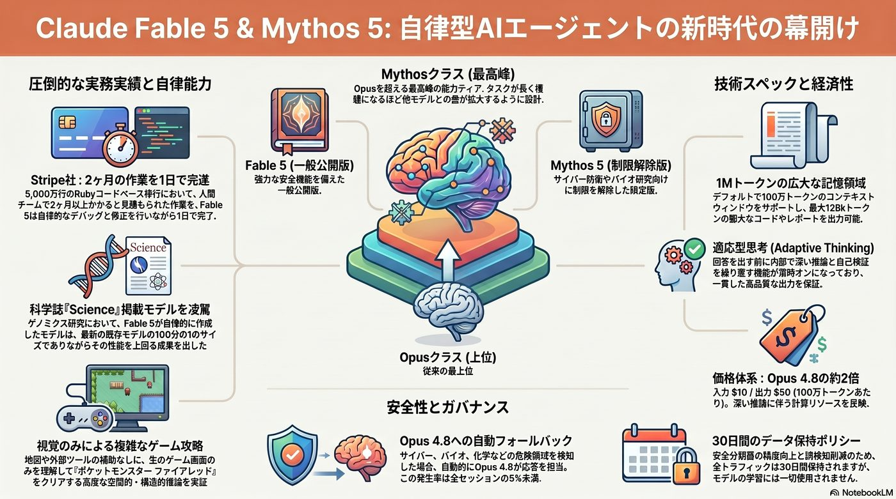
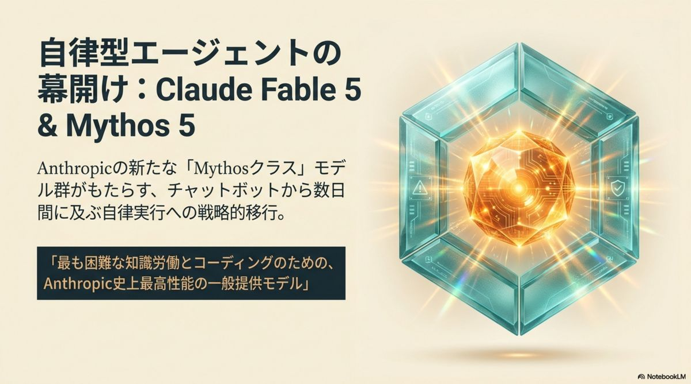
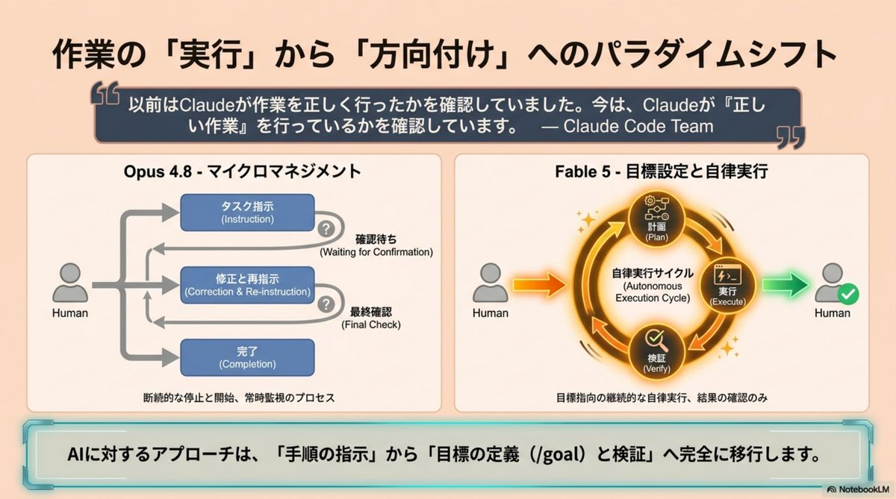
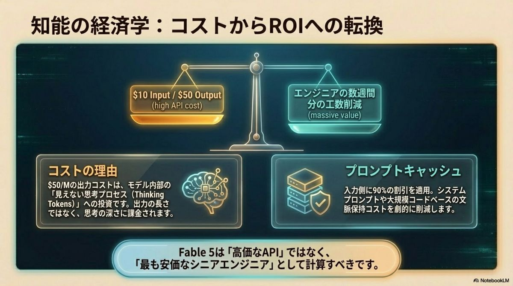
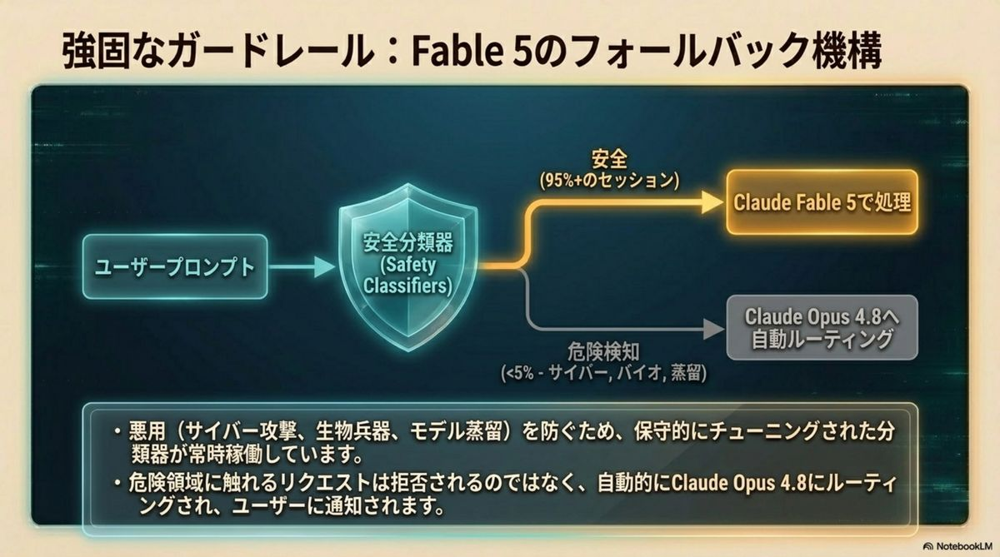
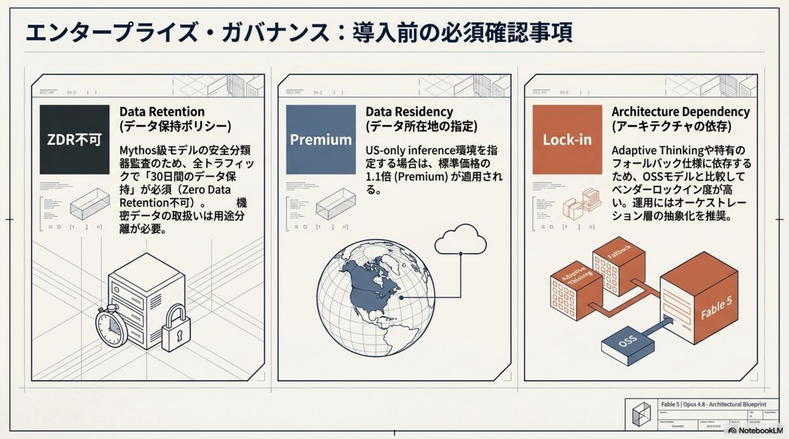
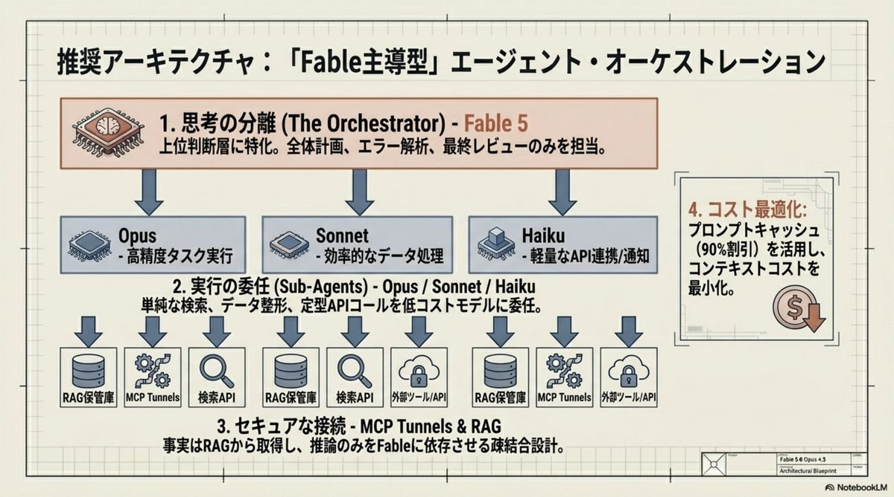
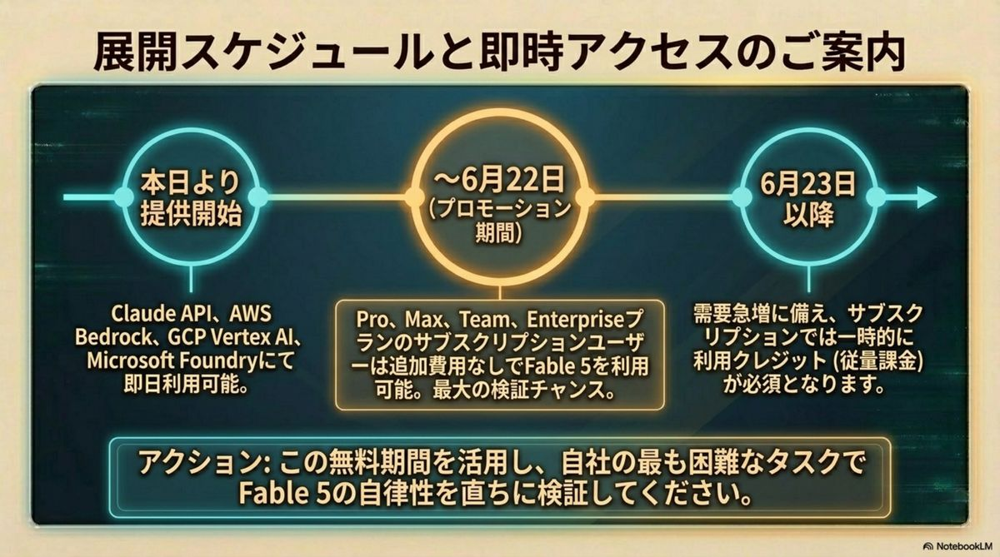

Claude Fable 5：
Opus級を超えた
Mythos級という
新たな知能階層
Anthropicが発表した「Claude Fable 5」は、従来最上位のOpusクラスを凌駕する新設階層「Mythos-class」に位置づけられる。 数日間にわたる複雑な非同期タスクを自己修正しながら自律遂行する 「自律型知的パートナー」の誕生だ。Stripe実測では5,000万行のRubyコードベース移行——チーム全体で2ヶ月超の見積もり——をわずか1日で完遂した。
（人手見積もり 2ヶ月超 · Stripe実測）
エンジニアリング自律実行
数百万トークン級タスクで集中維持
フォールバック発生は極めて限定的
全貌と実務実装戦略——エグゼクティブ・サマリー
Fable 5の進化は「進化（Evolution）」「安全（Safety）」「投資対効果（ROI）」の3本柱で読み解ける。圧倒的能力と二層構造の防御、そして高単価モデルをペイさせる戦略的活用法——導入判断に必要な全要素を俯瞰する。



「即時応答」から
「数日間の自律遂行」へ
Mythos-classの核心は、タスクの「複雑性」と「持続性」のパラダイムシフトにある。Fable 5とMythos 5は同一の基盤モデルを共有しつつ、一般提供版（Fable 5）と、サイバー防衛・バイオ医学研究向けに安全制限を一部解除した限定提供版（Mythos 5 — Project Glasswing等の信頼済みアクセス・プログラム向け）に分かれる。
| 軸 | Opus 4.8（Opus級） | Fable 5（Mythos級） |
|---|---|---|
| 役割 | シニアアシスタント（対話型） | プロジェクトアクセラレーター（自律型） |
| タスク持続時間 | 数分〜数時間 | 数日間〜数週間（非同期実行） |
| 作業プロセス | 人間によるマイクロマネジメントと都度確認が必要 | 目標（Goal）を与えれば計画・実行・自己修正・軌道修正まで自律完遂 |
| コンテキスト / 最大出力 | 1M / 128k トークン | 1M / 128k トークン 密度の高い適応型思考を内包 |
コーディング × 視覚 × 長期記憶：
監視から方向付けへ
三軸の統合がエージェント型ワークフローを劇的に変えた。人間が細部を「監視」する段階から、AIが自律的にプロセスを完遂する段階へ——実務の重心が移行している。
ソフトウェアエンジニアリング
単なるコード生成を超え、大規模コードベースのマイグレーションを完遂。SWE-bench 88.3%。圧倒的なトークン効率と実装精度でリードタイムを劇的に圧縮。
高度な視覚理解（Vision）
スクリーンショットのみからWebアプリのソースコードを再構築。科学図表からの精密な数値抽出。視覚情報のみで Pokémon FireRed をクリア、Factorio を自律プレイ。
長期コンテキスト × Adaptive Thinking
1Mトークンのコンテキストで数百万トークン級の長時間タスクでも集中力を維持。思考プロセスを活用して出力を継続改善する Adaptive Thinking は常時有効。
「手作業ではチーム全体で2ヶ月以上を要すると見積もられた5,000万行のRubyコードベース移行を、Fable 5はわずか1日で完遂した」— Stripe社による早期テスト実測（2026年6月）
「適応型思考」の対価：
$10 / $50 の読み解き方
価格は入力 $10/1Mトークン、出力 $50/1Mトークン——Opusの約2倍。高い出力コストは、内部で行う深い推論（Thinking tokens）の膨大な計算リソースを反映する。コスト最適化の鍵は入力側のプロンプトキャッシュ（最大90%割引）の戦略的活用だ。
| 項目 | 仕様 | 戦略的含意 |
|---|---|---|
| 入力価格 | $10 / 1M tokens | キャッシュで最大90%割引 |
| 出力価格 | $50 / 1M tokens（Opus比 約2倍） | 深い内部推論（Thinking tokens）の計算コストを反映 |
| Adaptive Thinking | 常時有効・無効化不可 | 一貫した高品質と引き換えにトークン消費の予測が必須 |
| 提供プラットフォーム | Claude API · AWS Bedrock · Vertex AI · Microsoft Foundry · GitHub Copilot | Foundry はエージェント評価・統制などエンタープライズ機能込み |
⚠️ コスト運用上の留意点
- Adaptive Thinking は無効化できない——予期せぬトークン消費を防ぐ評価運用が必要
- 「Computer Use」対応は一部マーケティングで強調されるが、APIドキュメントの正式対応リストに明記がないケースあり——実装前に公式リファレンスの再確認を推奨

拒否しない安全設計：
3分類器 × Opus 4.8 フォールバック
Mythos級の能力を一般公開するため、Anthropicは「能力の最大化」と「地政学・生物学的リスクの抑制」を両立する二層構造を採用した。危険なリクエストを検知しても単純拒否せず、自動的にClaude Opus 4.8へ処理を移行する「フォールバック機構」でUXを守る。
サイバーセキュリティ分類器
攻撃的なハッキングや脆弱性の悪用を目的としたタスクを検知し、ルーティングを切り替える。
生物学・化学分類器
生物兵器開発や危険な化学物質合成といったデュアルユース（軍民両用）リスクを監視する。
蒸留（Distillation）分類器
モデルの知能を抽出し競合モデル構築に利用する試みをブロック。モデル優位性を国家戦略的に保護する障壁。
フォールバック機構の実態
- セッションの95%以上でFable 5のフル性能が維持——フォールバック発生は極めて限定的
- 移行先のOpus 4.8も極めて高性能——安全性とUXを両立する優れたガバナンス設計
- 現在は保守的チューニングのため無害なリクエストへの偽陽性（誤検知）が発生し得る。継続アップデートで精度改善中

導入前の必須確認：
30日データ保持とZDR対象外
ガバナンス上の最重要項目は「30日間のデータ保持」ポリシーだ。新しい攻撃の検知や誤検知削減を目的に全トラフィックデータが30日間保持され、ゼロデータ保持（ZDR）の対象外となる。規制産業・機密情報を扱う企業は自社規定との整合性確認が必須となる。
⚠️ コンプライアンス上の制約
- 全トラフィックが30日間保持される——ZDR（ゼロデータ保持）契約の対象外
- 規制産業（医療・金融等）はデータガバナンス規定との整合性を慎重に確認
- Microsoft Foundry等プラットフォーム選定によりロックインとアーキテクチャ依存が発生し得る
| 期間 | 提供条件 | アクション |
|---|---|---|
| 〜 6月22日 | 各サブスクリプションプラン内で追加費用なしで利用可能 | 今が検証の好機 |
| 6月23日 〜 | Usage Credits 制へ移行 | コスト評価体制を整備 |
| その後 | キャパシティが整い次第、標準提供へ復帰予定 | 展開計画を準備 |

高ROIを生む現場：
金融・法務・ライフサイエンス
PDF・表・複雑なチャートが混在する大量資料を統合的に読み解き、シニアレベルの推論でレビューを支援。法務では弁護士レビューと同等以上の精度で契約書のレッドライン（修正案）を提示できることが確認されている。
ライフサイエンスでの実績（Mythos 5 限定含む）
- 創薬プロセスの10倍高速化——タンパク質設計で専門家の作業を10倍に高速化、14ターゲット中9つで有力候補を特定
- 革新的なゲノミクス研究——138種・数百万細胞のデータを解析しカスタムMLモデルを自律訓練。Science誌掲載の最新モデルより100倍小さいサイズで性能を凌駕
- 自律型エージェント開発——新機能「/goal」やワークフロー機能で、開発者の役割が「監視」から「方向付け（Direction）」へシフト
「Fable主導型」
エージェント・オーケストレーション
推奨構成は、Fable 5を「思考する頭脳（The Orchestrator）」として頂点に置き、実行コスト最適化のためにOpus・Sonnet・Haikuのサブエージェント群へタスクを委譲するピラミッド型だ。MCP TunnelsとRAGで企業データに接地させ、セキュリティ層がリクエストをガードする。
3層構成の役割分担
- 1. 思考の計画（The Orchestrator）——Fable 5 が目標を解釈し、計画・分解・検証を主導
- 2. 実行の委任（Sub-Agents）——Opus / Sonnet / Haiku が粒度に応じてタスクを実行しコストを最適化
- 3. セキュリティ統制（MCP Tunnels & RAG）——企業データへの安全な接地とガバナンスを担保

Fable 5は「賢いAPI」ではない。
自律作業の「プラットフォーム」である
数日に及ぶプロジェクトを自律完遂し、科学の限界を押し広げる「高度な知的パートナー」。この能力を戦略的に組み込むことが、企業の競争力とイノベーション速度を決定づける。導入は次の3ステップで始める。
01 · ボトルネック業務の特定
数日かかる調査・移行・分析など、「持続性」がボトルネックの業務を洗い出す。Fable 5の自律遂行が最も効く領域から着手する。
02 · モデル・ルーティングの設計
Fable主導のオーケストレーション構成で、Opus/Sonnet/Haikuへのタスク委譲を設計。プロンプトキャッシュで入力コストを最大90%圧縮。
03 · ガバナンスの設置
30日データ保持（ZDR対象外）と自社規定の整合確認。Adaptive Thinking常時オンを前提としたトークン消費の評価運用を整備。
「Claude Fable 5は、もはや単なる『チャットAI』ではない。数日に及ぶプロジェクトを自律的に完遂し、科学の限界を押し広げる『高度な知的パートナー』である」— Claude Fable 5 ブループリント（2026年6月）
